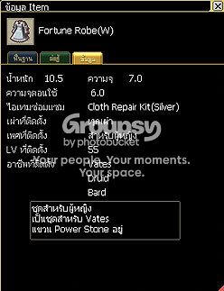
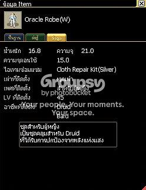
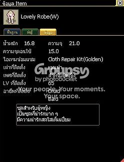

หน้า 1 จากทั้งหมด 2
ขอถามเรื่องชุดเวล 55 ของ druid หน่อยค่ะ

โพสต์แล้ว:
ศุกร์ 03 ส.ค. 2007 5:02 pmโดย ECO
รองเท้า 55 ของ druid นี่ได้จากเควสหรอคะ?
เควสไหนอาคะ? รบกวนตอบทีนะคะ
โพสต์แล้ว:
ศุกร์ 03 ส.ค. 2007 5:48 pmโดย ECO
ช่วยบอกรายละเอียดหน่อยได้มั้ยคะ ขอบคุณค่ะ
โพสต์แล้ว:
ศุกร์ 03 ส.ค. 2007 6:12 pmโดย ECO
อาชีพ Druid lv.55 จะไม่มีแยกเป็นรองเท้าเฉยๆ ค่ะ
เพราะชุด Druid จะเป็นสวมทั้งชุดเลยนะค่ะ เสื้อ+กระโปรง+รองเท้า
สามารถเริ่มเควสได้ที่ Npc. Remia ที่อยู่ที่ Acropolis City Downtown ค่ะ
เมื่อสามารถเคลียรเควสเรียบร้อยแล้ว npc จะเปิดร้านขายของให้ค่ะ :wink:
โพสต์แล้ว:
ศุกร์ 03 ส.ค. 2007 6:29 pmโดย ECO
ขอบคุณมากค่ะ
โพสต์แล้ว:
ศุกร์ 03 ส.ค. 2007 7:36 pmโดย ECO
แหงะgmเบลอแย้วง่า ชุด55นะคะ มะใช่ชุด45กะ65ที่มีชุดเดียว
ชุด55ของดรูดมี2ส่วนนะ คือ เสื้อกะรองเท้า
เสื้อทำเควสที่หมอดูในดาวทาวตามที่บอกเลยจ้า
รองเท้าไปรับเควสที่ตึกขวาเมืองใต้ชั้นบน จากลุงแก่ๆ เค้าจะให้great staffไปทำให้พังค่ะ
โพสต์แล้ว:
ศุกร์ 03 ส.ค. 2007 10:21 pmโดย ECO
GM Icy ท่าทางจะสับสนชุด 55 กับ ชุด 45/65 รึเปล่า -.-
ชุด 55 ส่วนเสื้อ + กระโปรงทำได้โดยเปิดร้านหมอดู แต่รองเท้าต้องไปทำลายไม้เท้าคุณลุงสุดแสนจะอึดนะ T-T
โพสต์แล้ว:
เสาร์ 04 ส.ค. 2007 11:09 amโดย ECO
อ้าว กำลังจาไปทำเยย ขอบคุณมากๆ ค่ะ
โพสต์แล้ว:
เสาร์ 04 ส.ค. 2007 2:58 pmโดย ECO
มีวิธีไหนจะทำไห้มานพังไวๆ มั้ยอาคะ
โพสต์แล้ว:
เสาร์ 04 ส.ค. 2007 6:02 pmโดย ECO
ทุบหินครับ เท่าที่ได้ยินมา
โพสต์แล้ว:
อาทิตย์ 05 ส.ค. 2007 9:47 amโดย ECO
ตกลงว่าซื้อไปแล้วล่ะค่ะ 120k - - ทุบตั้งนานไม่ลดเลยสักนิด
ขอบคุณทุกคนมากค่ะ
โพสต์แล้ว:
อาทิตย์ 05 ส.ค. 2007 10:50 pmโดย ECO
จีเอ็ม เริ่ม มั่วขึ้นทุกวัน เข้ามาเล่นบ้างหรือเปล่า เนี่ย ... เห็นตอบผิดมาหลายกระทู้ละ ถึงตอบไม่ผิด ก็ให้ข้อมูลแบบ ง่ายๆ มะมี แบบรายละเอียดต้องให้คนในบอร์ดมาตอบอีกทีถิงจะรู้ ไม่เข้าใจเลย เล่นบ้างเปล่า นะ งงจิงๆ
โพสต์แล้ว:
อาทิตย์ 05 ส.ค. 2007 10:55 pmโดย ECO
ขออภัยเป็นอย่างมากเลยค่ะ เห็นกระทู้ถามถึงชุด Druid
ไม่ใช่ชุด vates เลยคิดถึงชุด Druid 45 มองเลขผิดไปค่ะ
เลยแนะนำชุดของ Druid 45 ค่ะ  hock:
hock:
โพสต์แล้ว:
จันทร์ 06 ส.ค. 2007 9:26 amโดย ECO
ก็ druid น่ะสิคะ - -*
มะใช่ vates - -* เวล 55 หน่ะค่ะ
โพสต์แล้ว:
จันทร์ 06 ส.ค. 2007 2:31 pmโดย ECO



ถ้าเป็นชุด lv.55 จะเป็นของ Vates ค่ะ
ซึ่งชุดของ Vates ทุกชุดอาชีพ Druid หรือ Bard จะสามารถใส่ได้
เพราะว่าเป็น class แรกของสายอาชีพค่ะ
ซึ่งจริงๆ ถ้าเป็นของ Druid จะเป็น lv. 45 / 65 ค่ะ
ลองอ่านที่คำอธิบายนะค่ะ :wink:
โพสต์แล้ว:
จันทร์ 06 ส.ค. 2007 3:58 pmโดย ECO
อ๋อเหรอคะ เข้าใจแล้วค่ะนึกว่ามันเรียกได้เหมือนกันซะอีก
ไม่นึกว่ามันจะแยก เป็นชุด druid ตอน 45 กับ 65 แล้วมี vates ตอน 55
ขอโทษท่าน gm ที่เข้าใจไม่ตรงตามคำอธิบายไอเทมนะคะ ^^
และก็ขอโทษที่ใส่หัวข้อผิดแทนที่จะถามเรื่องชุด vates 55 แทน เลยทำให้ gm ตอบคำถามได้ไม่ตรง
แต่พอดีตัวเรามันเขียนว่า druid นึกว่าเหมือนกันน่ะค่ะ
ขอโทษจริงๆ ค่ะ ^__________^